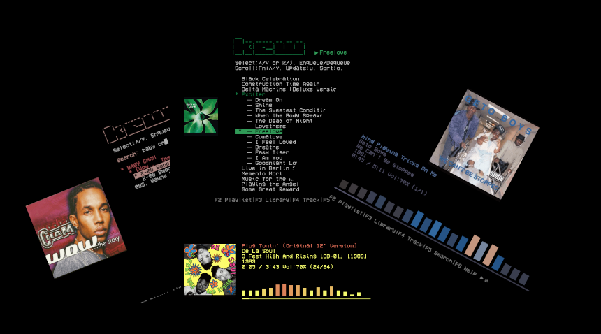

kew is an immersive and fast music player that allows you to listen to music with privacy. It’s a labor of love that grew out of frustration with the trajectory of music and the music industry.
kew is designed for those who want:
✅ A clean, distraction-free experience.
✅ A focus on selecting and experiencing music.
✅ Fair compensation for artists (by supporting owned music).

Features
- Play auto-generated playlists based on words from the artist, album or song name: ‘kew nirvana’.
- Gapless playback.
- Requires virtually no setup.
- Private and offline1.
- Music without distractions or algorithmic manipulation.
- Full color covers in sixel-capable terminals.
- Spectrum visualizer.
- Auto-generated themes based on album colors and custom themes.
- Music library explorer.
- Playlist editing (add, reorder, delete).
- Search.
- Lyrics support.
- Desktop integration (both Linux and macOS).
- Import/export .m3u playlists.
- Replay gain.
- Custom layouts.
- Crossfade (experimental), both automatic and on demand.
- Auto-Resume.
- Available on Linux, FreeBSD, Android, macOS, Windows and others.
Supported formats
Supported: m4a, raw aac, mp3, flac, wav, webm, opus, ogg.
With caveats, not supported:
- HE-AAC.
- E-AC-3.
- Alac.
-
kew can display your listening status in Discord, but this is now opt-in by popular demand. ↩